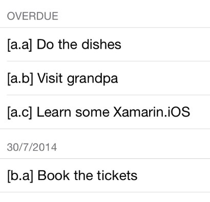

add Visit grandpa ^today #3
add Do the dishes ^tomorrow #1
add Laundry ^Jul29
Refer to the task id provided within square brackets when using this command 
rm 0.0
rm 1.0
do 0.0
do 1.0
The app icon is comming from HeskinRadiophonic - http://heskinradiophonic.deviantart.com/. There have been no modifications to the icon.